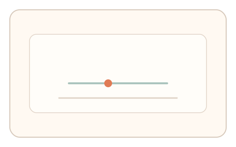
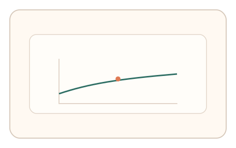
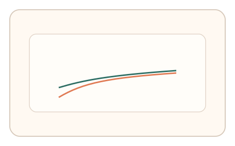

#178
Reverse Brainstorming - Round 4
已扩展
延迟漂移剖面
逐步改变响应延迟并记录适应曲线，识别固定延迟回放。
概念原文
在验证过程中逐步改变响应延迟并记录用户适应曲线，判断是否出现典型的回放“固定延迟”特征。
延迟回放难以跟随动态延迟漂移。
研究背景
真实用户会对延迟变化逐步适应，形成可观测的漂移剖面。回放或脚本通常表现为固定延迟模式。
核心机制
- 在验证过程中缓慢改变反馈延迟。
- 记录用户补偿行为与反应时。
- 拟合延迟适应曲线。
- 检测固定延迟或不适应模式。
用户流程
- 步骤 1：用户完成连续操作。
- 步骤 2：系统逐步改变反馈延迟。
- 步骤 3：系统分析适应剖面并判定。
判定信号
适应斜率
真实用户会逐步补偿延迟。
反应时漂移
延迟变化会改变反应时结构。
判定逻辑
适应曲线需连续且有补偿趋势；固定延迟或无适应判异常。
对抗面
- 脚本忽略反馈并固定输出
- 回放固定延迟轨迹
防御与缓解
- 随机化延迟漂移轨迹
- 加入短时反向漂移
- 与路径信号联合判定
可达性与风险
限制最大延迟并提供慢速模式。
- 高延迟设备误判
- 用户体验下降
可视化状态

状态 1：延迟变化
反馈延迟逐步漂移。

状态 2：适应轨迹
记录补偿与反应时。

状态 3：剖面判定
分析漂移剖面特征。
参考资料
Latency (engineering)
说明延迟与响应特性。
Reaction time
说明反应时变化与适应。